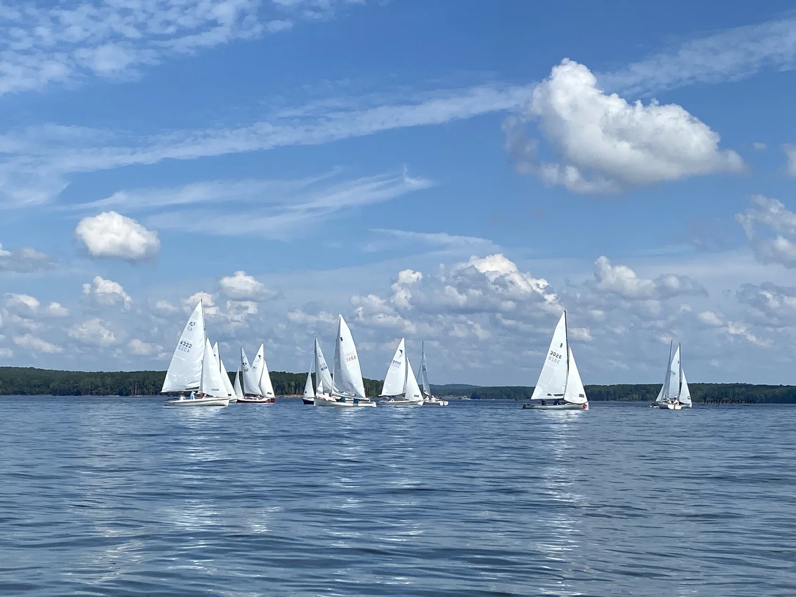

DRIFT AROUND AND SAIL WITH US
Hi!
We’re Billy and Jenifer.
Welcome to our blog Sailing Mothership. Join us as we sail our Hobie Tandem Island Kayak Sailboat anywhere and everywhere. Stick around and enjoy adventures full of sailing, eating, traveling, and just plain fun.
Our posts & videosOUR MOST RECENT POSTS & VIDEOS

You're going to get WET!
A fast, rough sail on Choctawhatchee Bay toward the Destin Bridge.
Read more →
Sailing around Destin Harbor
In and out of Destin Harbor in a low-riding kayak sailboat: a bit of a scary ride!
Read more →
Weather Can Change Quickly
A calm sail on Choctawhatchee Bay turns into a race against a storm.
Read more →You'll love this short highlight reel showcasing some of our adventures!
 ▶ Play on YouTube
▶ Play on YouTube
Subscribe and Follow our YouTube channel!
Looking for Information or Inspiration?
START WITH ONE OF THESE
